어느 날 엄마가
어지럽다고 하더니 쓰러지셨어요
병원에서는 뇌동맥류라며
빨리 수술을 받아야 한다고 했어요.
저에게 가족은 엄마와 언니뿐인데…
엄마가 아파서 너무 무서웠어요.
제가 엄마를 지킬 수 있을 때까지
엄마가 기다려주면 좋겠어요.
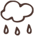
아이는 태어나 엄마 아빠의 손길과 목소리로
다정함을 경험하고 배웁니다.
하지만 어떤 아이들에게는
그 다정함을 함께 이어갈 누군가가 필요합니다.
병원에서는 뇌동맥류라며
빨리 수술을 받아야 한다고 했어요.
저에게 가족은 엄마와 언니뿐인데…
엄마가 아파서 너무 무서웠어요.
제가 엄마를 지킬 수 있을 때까지
엄마가 기다려주면 좋겠어요.

최근에 월드비전 국토대장정에서 60km를 완주했어요!
끝까지 해내고 나니
앞으로 어떤 어려움이 와도 제 꿈을 향해
계속 나아갈 수 있을 것 같아요.
말하는 입모양은 읽을 수 있지만
전화 통화는 할 수가 없어요.
그래서 제가 엄마 대신 전화를 받고,
말을 전해드려요.
저는 앞으로 하고 싶은 게 정말 많아요.
엄마도 제 꿈을 함께
알 수 있으면 좋겠어요.
후원자님을 만난 후로 요즘은 월드비전에서 다양한 활동을 하며
제가 좋아하는 것들을 배우고 있어요. 꿈도 하나씩 커지고 있어요.
엄마도 후원자님께 정말 감사하대요.
김유선(가명) 후원자와 후원아동 정민이(가명)가 함께 키워온 시간
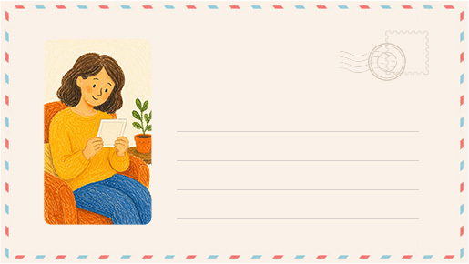
처음 정민이 사진을 보고 정말 설레었어!
새로운 인연은 언제나 설레잖아.
나의 새로운 인연이 되어줘서 고마워.
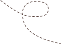
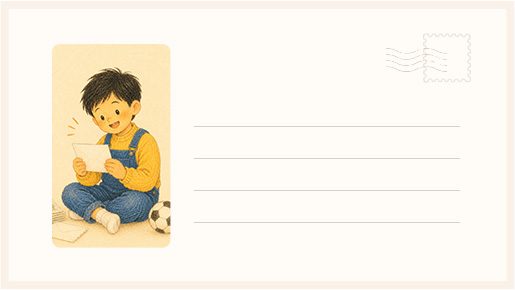
저의 꿈을 응원해 주셔서 감사해요.
후원자님처럼 따뜻한 분을 만나
얼마나 행복한지 몰라요.
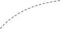
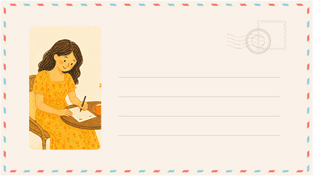
이모도 어릴 적 월드비전의 후원아동
이었단다. 그래서 정민이를 보면 어린
시절의 내가 떠올라. 앞으로 세상의
아름답고 행복한 것들을 많이 만나길
바랄게.
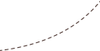
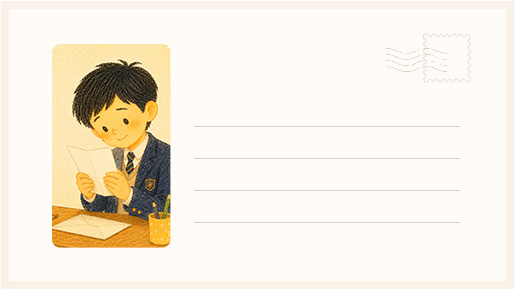
후원자님과 편지를 주고받는 시간이
정말 기다려져요.
후원자님의 편지는 저에게 큰 힘이 돼요.
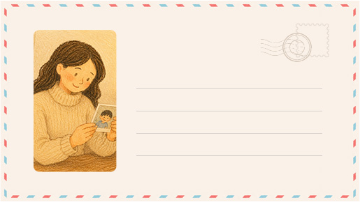
우리가 서로 만난 적은 없지만,
서로의 이름을 부르고 안부를 나누며
함께한 시간이 참 소중했어.
너를 통해 많은 기쁨과 감사를 느낀
사람이 있단 걸 잊지마렴.
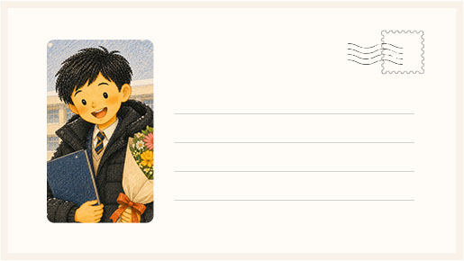
저도 후원자님처럼 받은 사랑을 다른
사람에게 나누는 어른이 되고 싶어요.
후원자님 말씀을 오래도록 마음에 새기며
꼭 멋진 어른으로 성장할게요.
후원자님처럼요!
김유선(가명) 후원자와
후원아동 정민이(가명)가 함께 키워온 시간
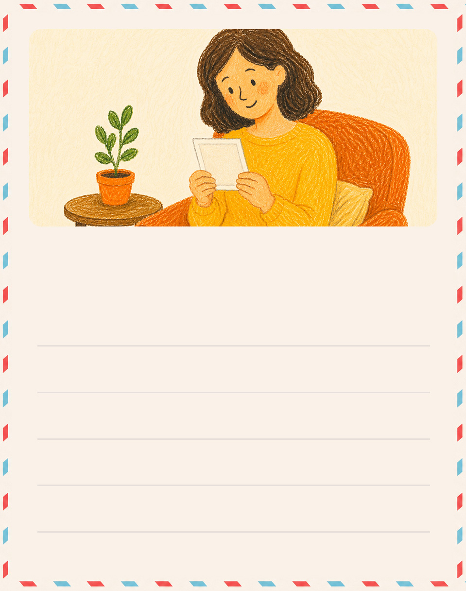
처음 정민이 사진을 보고 정말 설레었어!
새로운 인연은 언제나 설레잖아.
나의 새로운 인연이 되어줘서 고마워.
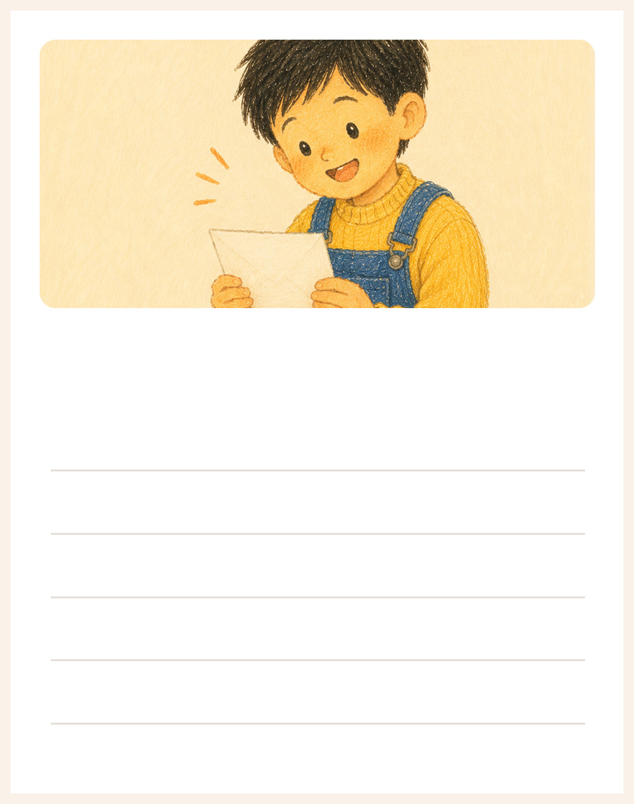
저의 꿈을 응원해 주셔서 감사해요.
후원자님처럼 따뜻한 분을 만나
얼마나 행복한지 몰라요.
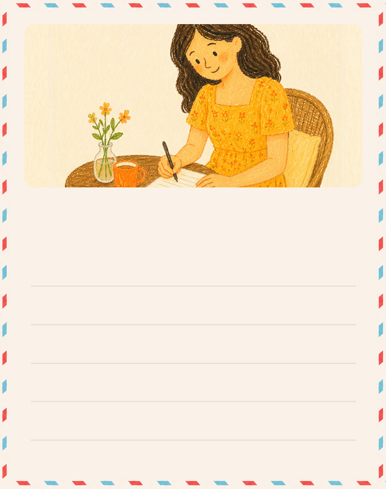
이모도 어릴 적 월드비전의 후원아동
이었단다. 그래서 정민이를 보면 어린
시절의 내가 떠올라. 앞으로 세상의
아름답고 행복한 것들을 많이 만나길
바랄게.
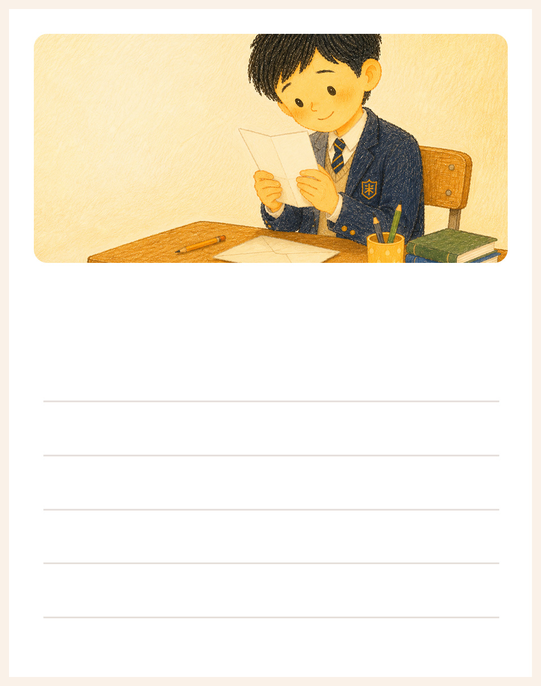
후원자님과 편지를 주고받는 시간이
정말 기다려져요.
후원자님의 편지는 저에게 큰 힘이 돼요.
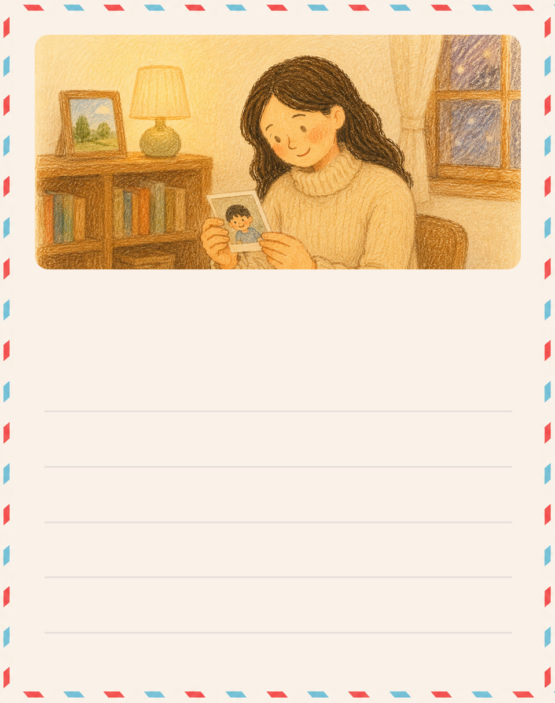
우리가 서로 만난 적은 없지만,
서로의 이름을 부르고 안부를 나누며
함께한 시간이 참 소중했어.
너를 통해 많은 기쁨과 감사를 느낀
사람이 있단 걸 잊지마렴.
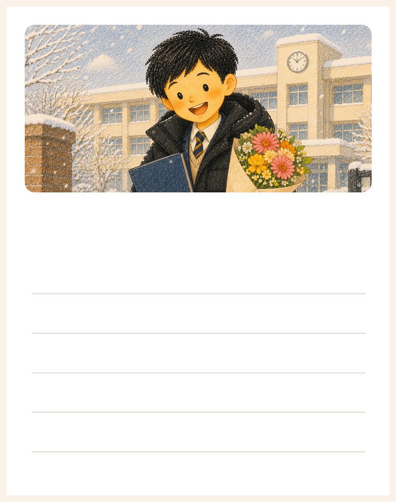
저도 후원자님처럼 받은 사랑을 다른
사람에게 나누는 어른이 되고 싶어요.
후원자님 말씀을 오래도록 마음에 새기며
꼭 멋진 어른으로 성장할게요.
후원자님처럼요!
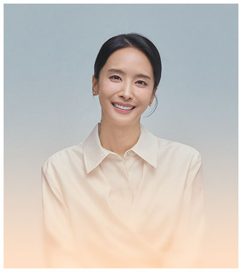
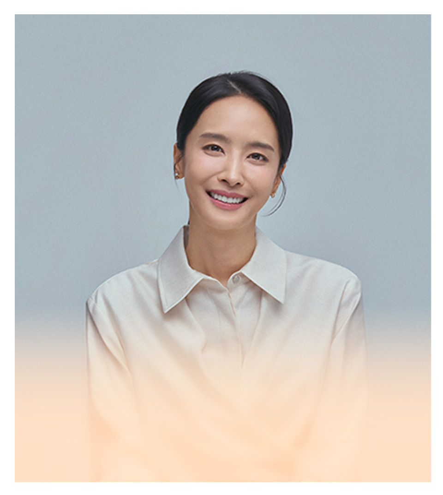
아이의 오늘이 든든해지고,
내일의 가능성이 자라납니다.
생계비, 주거비, 의료비 등 아이와 가족이 안정된 일상을 이어갈 수 있도록 지원합니다.
교육비와 꿈지원금, 진로탐색·멘토링·체험활동 등 아이의 꿈과 가능성을 키웁니다.
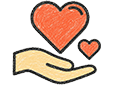
정기 상담과 사례관리, 부모교육과 가족 프로그램으로 아이가 건강하게 성장할 수 있도록 함께합니다.
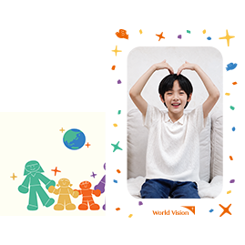
웰컴메시지와 후원시작증서, 웰컴패키지가 후원자님을 찾아갑니다.
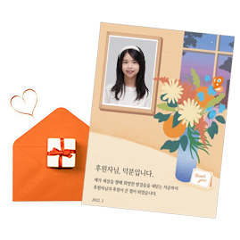
생일을 비롯한 특별한 날을 축하하며 일상을 응원하는 편지를 주고 받습니다.
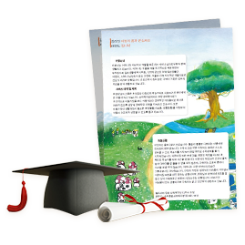
아동성장보고서를 통해 한 아이의 성장과 변화를 함께 지켜 볼 수 있습니다.
박정아가 전하는 캠페인 초대 영상 보기
서로를 모르지만 같은 아이의 내일을 함께 응원하는 사람들.
누군가는 아이의 식사를 지키고,
누군가는 꿈을 응원하며,
누군가는 편지 한
장으로 용기를 전합니다.
당신의 다정한 마음이 더해질 때
또 한 아이의 가능성이 자라납니다.
오늘 세상에서 가장 다정한 후원으로 함께해
주세요.
국내아동후원은 어떤 아이들을 지원하나요?
후원금은 어디에, 어떻게 사용되나요?
국내아동후원은 1:1 결연인가요?
국내아동후원은 언제까지 하나요?
아이와 편지를 주고받을 수 있나요?
아이를 직접 만날 수도 있나요?
편지나 선물을 보내고 싶어요. 어떻게 할 수 있나요?
월드비전은 해외아동을 돕는 단체로 알고 있는데, 국내아동도 지원하나요?
후원금은 투명하게 사용되나요?
경제적인 상황이 달라지면 후원을 변경하거나 잠시 쉬어 갈 수 있나요?
월드비전을 통해 후원받은 아이들은 얼마나 되나요?